Introduction
This classic lasagna recipe is made with an easy meat sauce as the base. Layer the sauce with noodles and cheese, then bake until bubbly! This is great for feeding a big family and freezes well, too.
The Best Homemade Lasagna
Ingriedients
For the meat sauce
- 2 teaspoons extra virgin olive oil
- 1/2 medeim sized Onion, diced(about 3/4 cup)
- 1/2 large bell pepper(green, red or yellow), diced (about 3/4 cup)
- 2 cloves garlic, minced
- 1 (28-ounce) can good-quality tomato sauce
- 3 ounces tomato paste (half a 6-ounce can)
- 1 (14 once) can crushed tomatoes
- 2 tablespoons chopped fresh oregano, or teaspoons dried oregano
- 1/4 cuo chopped fresh parsley(preferably flat leaf), packed
- 1 tablespoon to 1/4 cup sugar (to taste, optional)
- Salt
To assemble the lasagna
- 1/2 pound dry lasagna noodles (requires 9 lasagna noodles - unbroken)
- 15 ounces of richota cheese
- 1 1/2 pounds (24 ounces ) mozzarella cheese, grated or sliced
- 1/4 pound (4 ounces ) freshly garted Parmesan cheese
Method
-
Put Pasta water on to boil
Put a large pot of slated water (1 Tbsp salt for every 2 quarts of water) on the stovetop on high heat. It can take a while for large pot of water to come to boil (This will be your extra Pasta water), so prepare the sauce in the next steps while the water is heating
-
Brown the ground Beef
In a large skillet heat heat 2 teaspoons of olive oil on medium high heat. Add ground beef and cook until it is lightly browned on all sides
Remove the beef with slotted spoon to a bowl. Drain off all but a tablespoon of fat
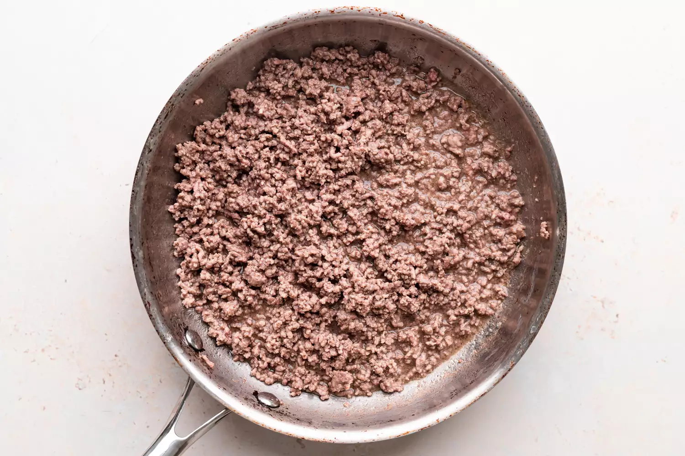 -
Cook the bell pepper, onions, garlic, add back the beef
Add the diced pepper and onions to skillet (in the photo we are using yellow pepper and red).
Cook for 4 to 5 minutes, until the onions are translucent and the pepers softened. Add the minced garlic and cook half a minute more
Return removed beef to the pan. Stir to combinen reduce the heat to low and Cook for another 5 minutes
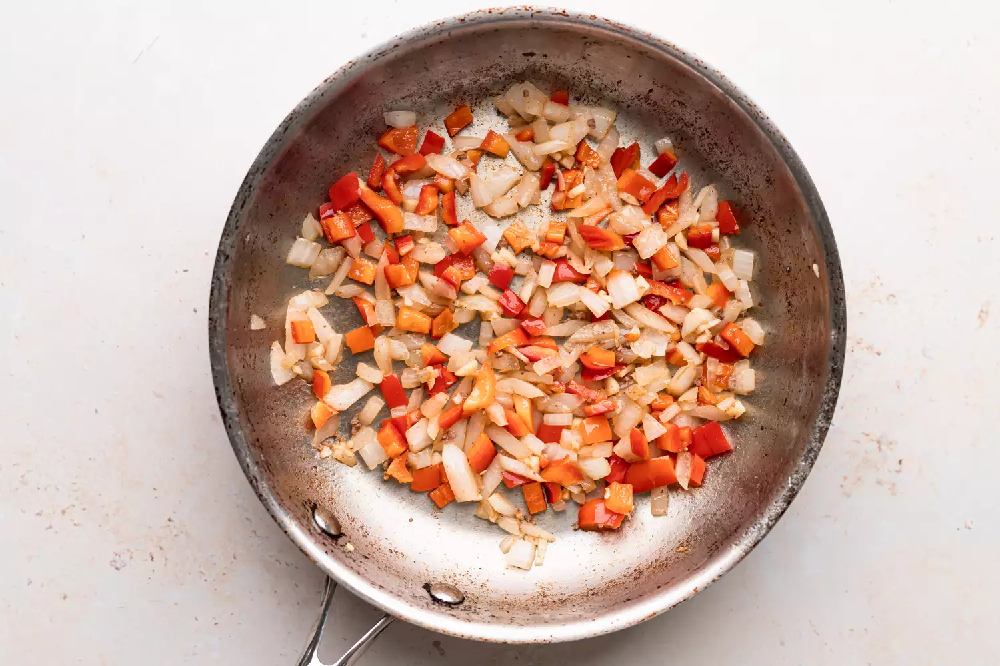 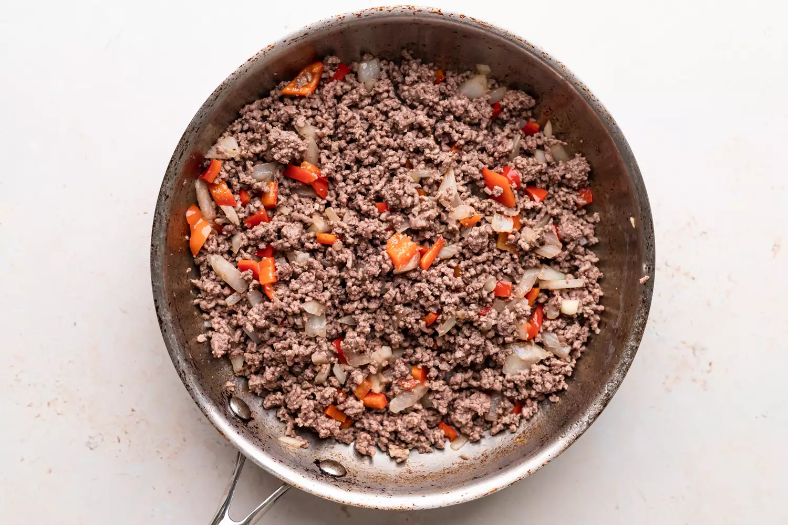 -
Transfer to medium sized pot, add tomatoes and remaining sauce Ingriedientsto build the
Transfer the mixed beef mixture to a medium sized (3-to 4-quart) pot. Add the crushed tomatoes, tomatoe sauce, and tomato paste to the pot.
Add the parsley, oregano, and italian seasonings, adjusting the amounts to taste. Sprinkle with garlic powder and/ or garlic salt to taste.
Sprinkle with red or white vineger. Stir in sugar, a tablespon at a time, tasting each addition to taste. (The amount of sugar needed will vary, depending on how acidic the tomatoes are that you are using.)
Add salt to taste and note that you will later be adding Parmesan, which is salty.
Bring the sauce to simmer and theb lower the heat to maintain a low simmer. Cook for 15 to 45 minutes, stirring often. Scrape the bottom of the pot every so often so nothing sticks to the bottom and scorches.
Remove from heat
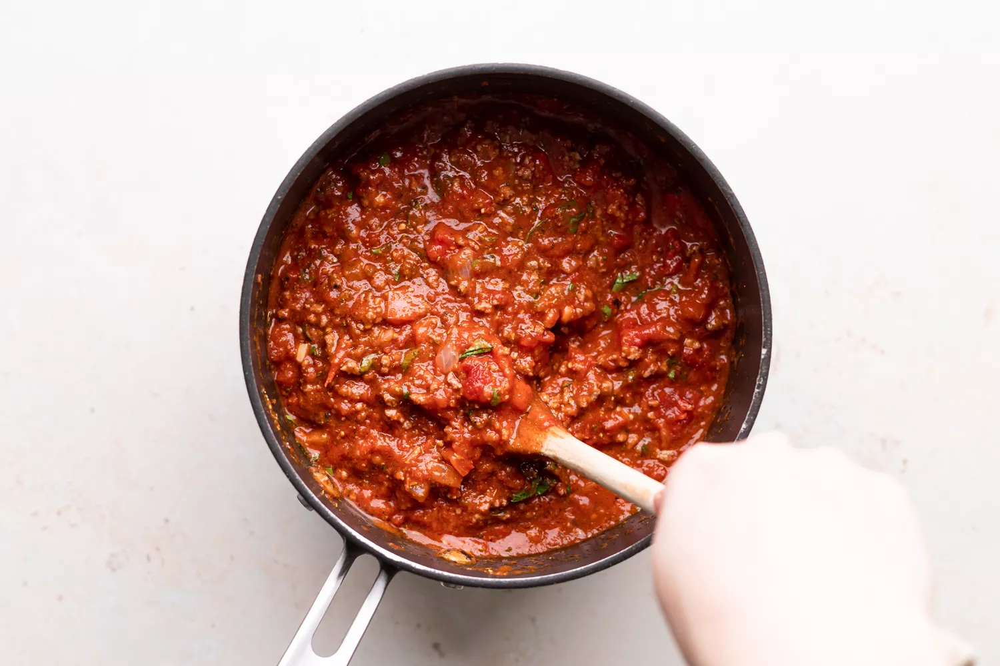 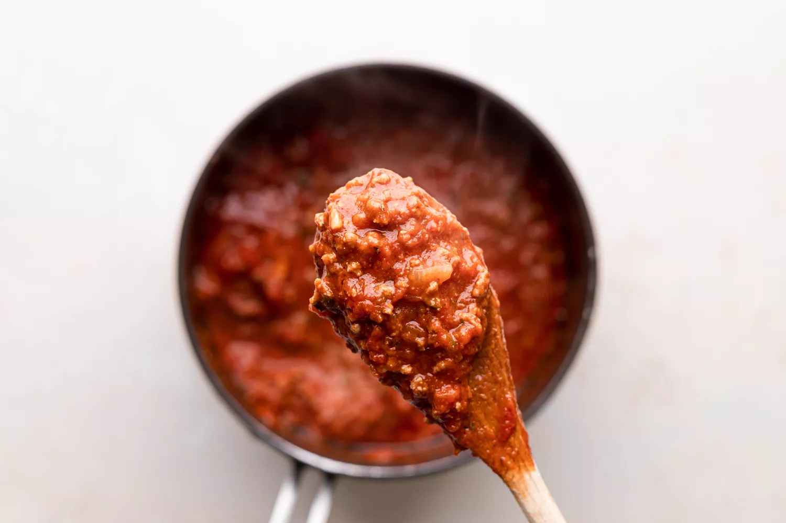 -
Boil and drain the lasagna noodles
By now the salted water you started heating in step 1 should be boling. Add the dry lasagna noodles and cook them to all dente, per package directions. (Note noodles may be cooked in advance)
Stir often to prevent from sticking. Make sure that water remains at full rolling boil during the entire cooking to prevent noodles fron sticking.
When ready to drain in a colander and rinse with cool water, gently separating any noodles that may be sticking together.
Spread a little olive oil on a large rimmed baking sheet and lay out the cooked noodles on this sheet, turning them over so that they get coated with a little of the olive oil. This is to prevent them from sticking together
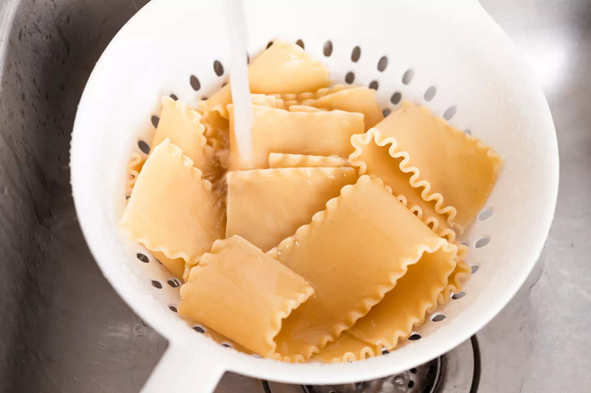 -
Heat the oven to 375 ℉
-
Assemble the lasagna
In a 9x13-inch casserole or lasagna dish, ladle a cup of sauce and spread it over the bottom of the dish. Arrange one layer of lasagna noodles lengthwise (about 3 long noodles, edge may overlap, depending on your pan) over the sauce. Ladle a third of the remaining sauce over the noodles.
Sprinkle a layer of a third of the grated mozzarella on top of lasagna sauce. Add half of the ricotta cheese, by placing cheese dollops every couple inches. Sprinkle half the grated parmesan cheese evenly over the top of ricotta cheese.
Apply second layer of noodles, top it with half of the remaining sauce. Add half of the remaining Mozzarella, the r emaining ricotta cheese, and another the remaining Parmesan.
Finish with another layer of noodles. Spread the remaining sauce over the top layer of noodles and sprinkle with the remaining Mozzarella cheese.
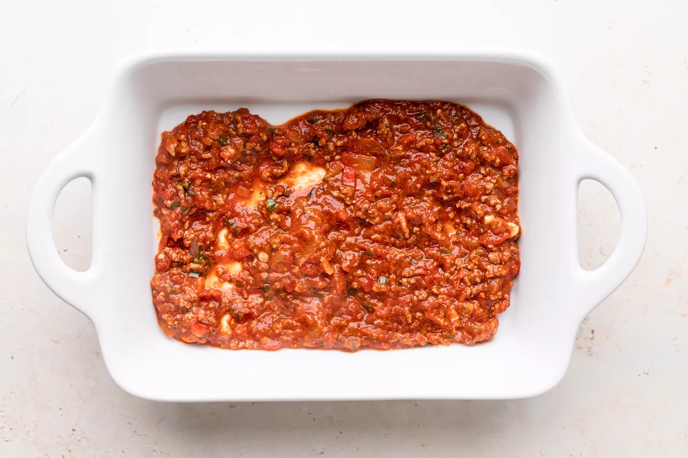 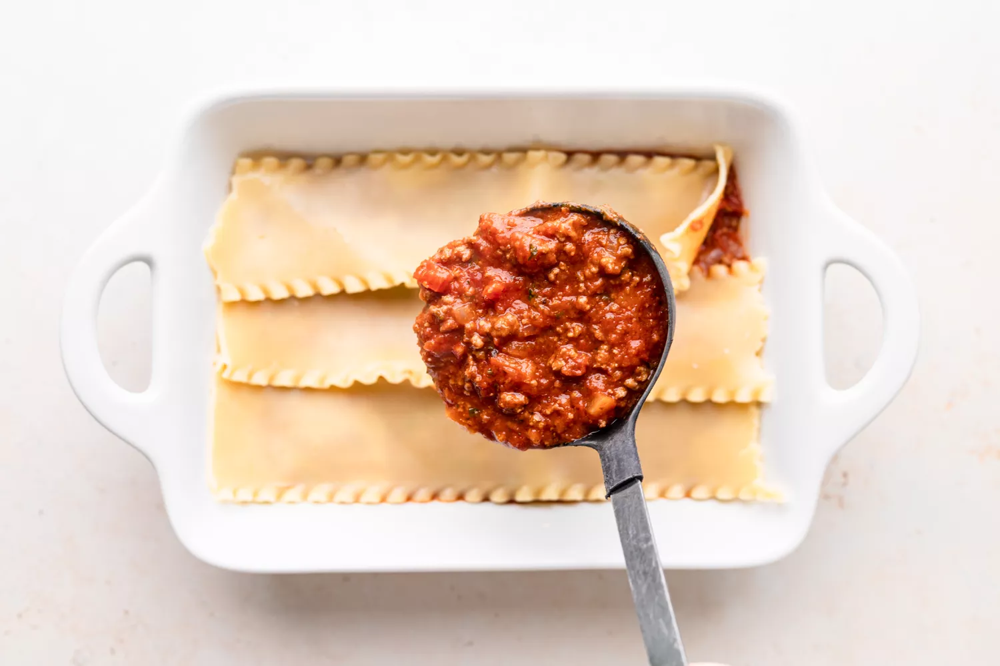 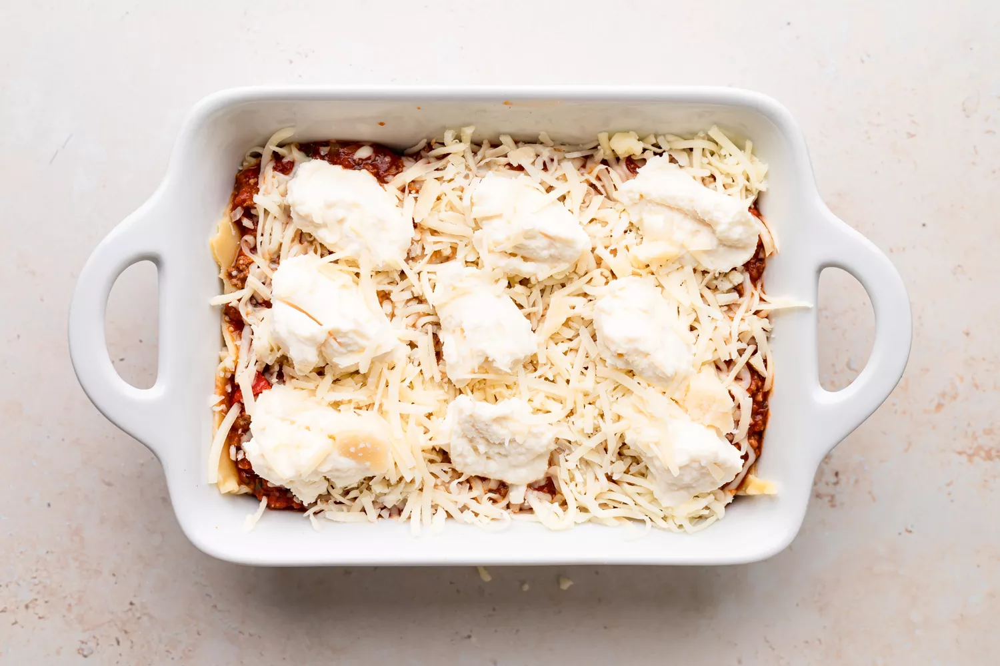 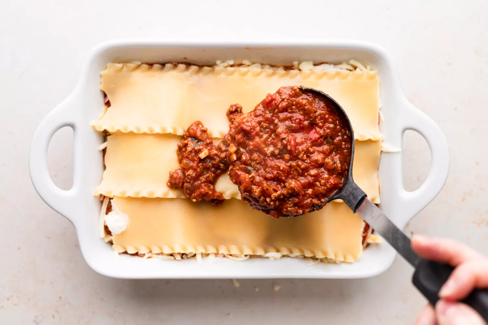 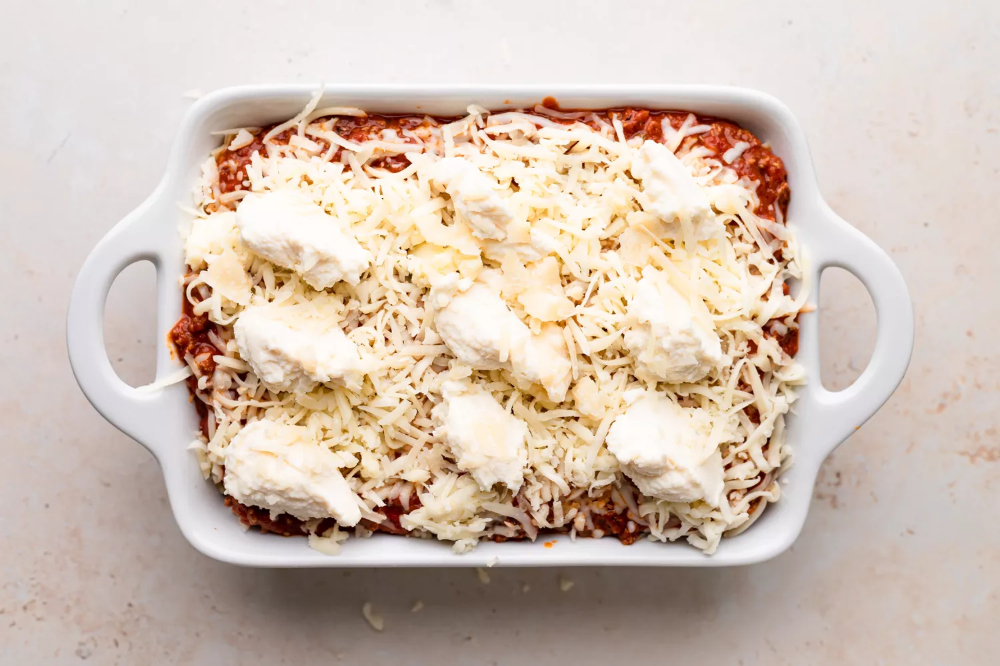 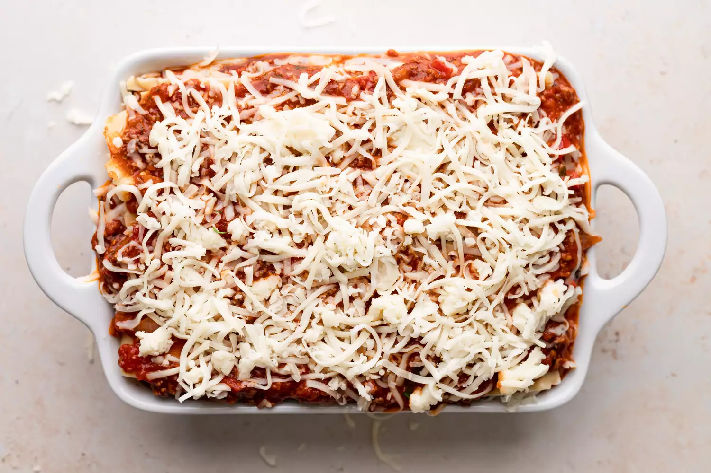 -
Bake
Cover the lasgna pan with aluminium foil, (tented slightly so it doesn't touch the noodles or sauce) Bake at 375 ℉ for 45 minutes. Uncover in the last 10 minutes if you-d like more of a crusty top or edges.
-
Cool and serve
Allow the lasagna to cool atleast 15 before serving. Leftovers will keep about 5 days. May be reheated in conventional microwave. Leave aluminium tent for storage. (Try to keep the aluminium foil from touching the sauce.)
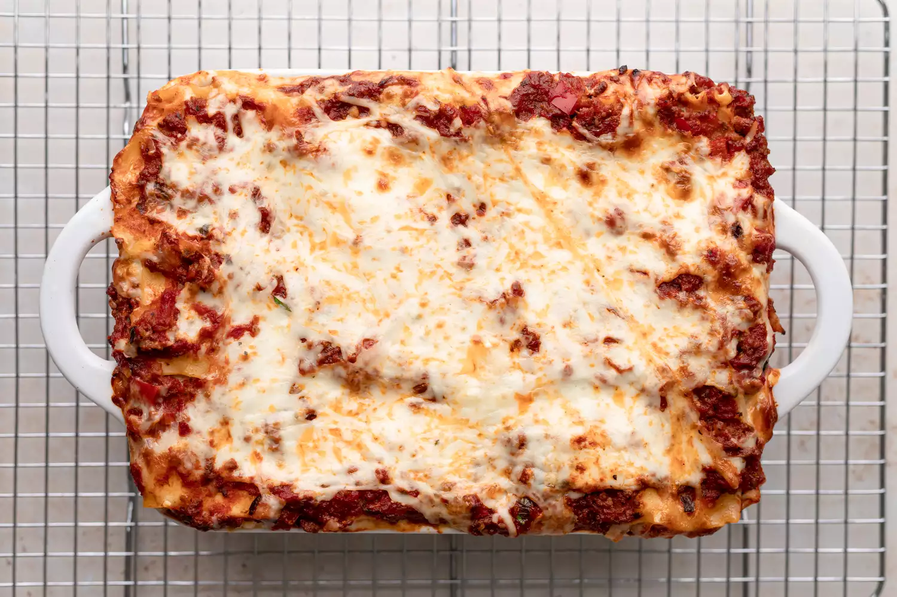